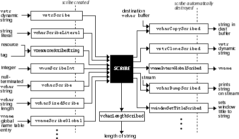
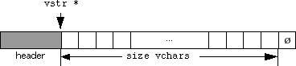

Strings, Character Sets, and Scribes
Galaxy provides a broad base of functions for manipulating strings. Both static and dynamic strings are supported, as are facilities for dealing with strings in varied character sets.
Character Sets
In traditional development environments, all strings are represented in a single character set, typically ASCII. If a program is to be able to run in different languages or on different types of systems, however, this condition is no longer acceptable. The programmer must deal with several potentially different character sets, some of which may not even be known until run-time.
Galaxy defines several abstract character sets. The actual character sets in which these abstract character sets are implemented may vary depending on various factors and should not be assumed by the developer. These character sets are the vchar character set, the literal character set, and the system character set.
The most important character set is the vchar character set. This is the character set used for all text processing done in a Galaxy application. Each character in this character set has the type vchar. All Galaxy entry points that take a string as a parameter (other than string conversion entry points) expect a string in the vchar character set. The vchar character set is bound to a "real" character set at compile time.
The character set used for the vchar character set is always a fixed width character set. This means that all characters in the character set are represented by the same number of bits. Character sets that use "escapes" to change character width will never be used as the vchar character set. Non-spacing characters, however, are permissible in the vchar character set. A non-spacing character is a character that effectively modifies the character preceding it in the string (an example is a non-spacing accent character, whose effect is to place an accent mark over the preceding character in the string).
The literal character set is the character set in which the compiler generates string literals (also known as string constants) and character constants. The character set that is used to implement this abstract character set is determined based on the compiler and is also bound at compile time. Note that this character set is not in general the same as the vchar character set. For example, the compiler may generate constants in ASCII, while Unicode is used for the vchar character set. Or, as is common in Japanese development environments, the literal character set may be a multibyte (non-fixed width) character set, while the vchar character set is a wide (16- or 32-bit fixed width) character set.
The system character set is the character set that is understood by the system the Galaxy application is running on. This character set should be used when going around Galaxy and passing strings directly to and from the operating system. It is also used internally by Galaxy in its interface to the system. Since a single Galaxy application may need to be able to run on systems with different system character sets, the system character set is not known until run time.
If you are using Galaxy with the native compiler on a particular system, the system and literal character sets will usually be the same. However, some compilers will allow you to choose between multiple character sets for string literals. If this is the case, and the vchar character set is different from the system character set, you might choose to have the compiler generate strings in the vchar character set rather than the system character set for efficiency reasons.
Note that the literal and system character sets will not always be fixed width character sets.
Finally, Galaxy knows about many character sets by name. Currently, ASCII, Latin-1, Macintosh Roman, Unicode, and Japanese EUC are supported as internal vchar character sets, while facilities are provided to import and export strings encoded in other well known standards such as Latin2, Latin3, Latin4, Latin5, Shift-JIS, Japanese EUC. As international versions of Galaxy are released, all major character sets will be supported.
It is important to note that although a single application always uses the same character set as its vchar character set, different Galaxy applications (or even the same application compiled differently) may have different character sets for their vchar character sets. Thus, all direct communication (including data storage) between Galaxy applications should take place in either the system character set (when the applications are running on the same system) or in a known, fixed character set (such as ASCII). In addition, various parts of Galaxy (such as the Resource class) provide facilities for dealing with this problem.
String Representation
Galaxy supports two general representation schemes for strings: null-terminated strings and explicitly sized strings. Both of these represent a string as a C-style array of characters. The difference lies in the way the length of the string is encoded.
The null-terminated string is the traditional string representation in C. In this scheme, the end of the string is marked with a zero-valued (or null) character. The advantage is that a string can be represented by a single pointer, and the length indication only takes up one additional character, regardless of the length of the string. The disadvantages are that finding the length of the string is a non-trivial operation, and strings that contain embedded null characters cannot be represented in this way.
The other scheme is the explicitly sized string. In this scheme, the length of the string is stored separately from the string data itself. This allows representation of strings that contain null characters, and of course the string length is readily available without scanning the string. Copy operations on sized strings can also be considerably faster than copy operations on null-terminated strings, as the characters may be able to be copied a machine word at a time, rather than a single character at a time. However, using explicitly sized strings can be awkward because each string is represented by two values: a pointer and a length.
String Storage
Aside from the representation scheme for the string, the storage of the string can vary as well. Examples of possible storage types are static, dynamic, name tables, and resources.
The simplest type of string storage is static storage. This is when you just declare an array of characters (and possibly a length) and write the contents of the string into the array. This is the easiest (and most efficient) way to store a string if the length of the string is fixed, or at least well-bounded.
A more flexible (but less efficient) way to store strings is to let Galaxy allocate space for them dynamically. Galaxy provides a set of routines for managing dynamic strings.
Name tables provide an efficient way to store strings when you have many strings that do not change over time. Within a single name table, identical strings are stored only once, and equality of strings in the same name table can be tested by simply comparing the string pointers. Strings stored in name tables are read-only. Name tables are implemented by the Name class.
String resources are used to store strings in files. The strings are stored in a system-independent way. String resources are handled by the Resource class.
Scribes
All of the different possible character sets, representations, and storage methods for strings lead to a problem in defining interfaces for functions that take strings as parameters. Namely, in what form should the string be specified? Typically, the caller has a string in one form, while the function wants the string in another form.
To solve this problem, Galaxy introduces the concept of a scribe. A scribe is a temporary object that contains the information necessary to write out a string in whatever format or location is desired. This object serves as a "third-party translator" between the function caller and function implementor. The function caller simply creates a scribe from the string (in whatever representation the string currently exists) and passes the scribe to the function. The function then tells the scribe what representation it wants the string in. If the caller's original representation and the implementor's required representation are the same, this can be done with no work at all. If some conversion is required, it is done directly to the representation desired by the function implementor, avoiding intermediate translation steps.
The creation of scribes is relatively inexpensive because a scribe does not "own" any data it references when it writes its string; it simply points to data in other locations. This means that a scribe does not have to do any string copying when it is created; it also means that the scribe will not be valid if any of this data changes or goes away. However, this is not a problem because the lifetime of a scribe is very short (usually just one function call).
Key Functionality
Galaxy uses three different prefixes in naming its functions: vchar, vstr, and vscribe. The vchar functions deal with single characters and with the contents of strings (they have no effect on the storage of the strings). The vstr functions manipulate dynamically allocated string objects. Finally, the vscribe functions routines deal with low-level manipulation of scribes.
Each of these module prefixes is also the name of a data type. vchar is the type of a single character in the vchar character set. It will represent some integral type, either signed or unsigned (depending on the actual character set used to implement the vchar character set). vstr is the type given to dynamic string objects. However, as a convenience, vstrs are implemented in such a way that a vstr * is identical (in both value and type) to a vchar * pointing to the first character in the dynamic string. Thus a vstr * can be used as a vchar * without a cast. (Note that the reverse is not necessarily true.) vscribe is the type used to represent a scribe.
When string, scribe, and character functions take or return a length for a vchar string as a parameter, the length value is the number of characters in the string, not the size of the string in bytes. If the string being measured is in a different character set, there are several cases to be considered. If the character set is a fixed width character set, the length is measured in characters, just like with vchar strings. If the character set is a variable width (multibyte) one, the length is measured in units of the smallest character in the font (this will typically be one byte). Thus the length of a multibyte string is a measure of the space the string occupies, as opposed to the number of characters in the string.
Note that when using null-terminated strings, the null-terminating character is never included in the length of the string.
Using Scribes and vscribe Functions
Scribes are temporary interface objects that are used to manage the translation of strings from one format or representation to another. You can make a scribe from any string or string-like data, and you can use a scribe to get a string in any format or representation.
To convert string data from one format to another, you first make a scribe from it and then make the desired string type from the scribe. Because creating a scribe has very little overhead, such a translation is nearly as efficient as directly converting between the two types.
For general use of scribes, there are two types of functions that are important. The first is a Scribe function, which creates a scribe. (Scribe here is a verb; it means "make a scribe" in Galaxy function names.) The other kind of function is a Scribed variation of a function, which takes a string as a parameter. (Scribed is an adverb; it is appended to the regular entry point name.) This kind of function is used to "extract" the string from the scribe. Figure 76 shows some commonly used Scribe functions and Scribed variations and the kind of data they use.
Figure 76. The Galaxy scribe process

Note that when a scribe is passed to a Scribed variation, ownership of the scribe passes to the function. The function will then take care of destroying the scribe (either explicitly or by passing it to another Scribed variation of another function).
When a string is extracted from a scribe, the scribe writes it in a specific character set, determined by how the scribe was created. Nearly all of the time, this character set will be the vchar character set. However, there is a limited set of scribes, called export scribes, that may write their strings in different character sets. The use of these scribes is limited to exporting strings from the vchar character set into different character sets. Except where a scribe is explicitly described in the documentation as an export scribe, you can assume that a scribe will write its string in the vchar character set. Note that export scribes are really no different than ordinary scribes; they simply have no restriction on the character sets they write their strings in.
Because a scribe may not own a string or other data to which it contains references, scribes should not be used to store strings. They are intended to be transient objects only. Also, because ownership of a scribe is passed when the scribe is passed to a Scribed function, a scribe cannot be used more than once. If you need to store a scribe for an extended period of time, or use it to specify a string more than once, you should use the scribe to create a string (for example, with vstrCloneScribed), and then perform whatever actions you need to do with the string instead.
The main place you use scribes is where you have some data that is not a null-terminated vchar string, and you want to pass it as a string to a function. Simply Scribe the data and pass it to the Scribed variation of the function you wish to call. Galaxy will take care of converting the data to a form that the function can use.
For example, to set the title of a dialog you could do one of the following depending on the type of data you want to describe the title:
Another use of scribes is to perform some sort of string processing on a string already in the vchar character set. For instance, there are scribes that convert the case of their arguments or perform replacement operations on the strings used to create them. Although this type of "string processing" scribe is not fundamentally different from the "type conversion" scribe, you will typically use them in different situations.
Most of the functions that are prefixed by vscribe are low-level functions that you will not need to deal with directly. (Use of these functions is covered in a later section.) However, there is one function that you may find useful in normal scribe use. If you want to "glue" several scribes together to make a scribe that writes the concatenation of all of the scribes' strings it contains, call vscribeScribeMulti. For example, the following code sets the title of the dialog to "Untitled 1."
If you need to specify a string to a function that has no Scribed variation, you will need to convert whatever data you have into a string the function can handle (usually a null-terminated vchar string). An easy way to do this is to create a dynamic string with vstrCloneScribed, which you can then destroy with vstrDestroy after calling the function. For example:
vdialogSetTitleScribed(myDialog, vcharScribeLiteral("The New Title"));
vdialogSetTitleScribed(myDialog, vnumScribeInt(7));
vdialogSetTitleScribed(myDialog, vresourceScribeString(myRes, myTag));
Note that ownership of the scribe created by the Scribe function is passed to SetTitleScribed, which takes care of destroying it. int index = 1;
vwindowSetTitleScribed(myWindow,
vscribeScribeMulti
(vcharScribeLiteral("Untitled "),
vnumScribeInt(index),
NULL /* marks end of scribe list */));
Note that because of the way functions with variable arguments are handled in C, you must pass a null pointer at the end of the list of scribes to combine. Note how ScribeMulti gives you functionality similar to the sprintf function in the standard C library, enabling you to combine different types of data together into a single string.void IsItAMonkey (vchar *testString)
{
vstr *monkeyString;
monkeyString = vstrCloneScribed(vcharScribeLiteral("Monkey"));
if (vcharCompare(testString, monkeyString) == 0)
// They matched, so do something
;
vstrDestroy(monkeyString);
Using vchar Functions
vchar functions perform most general string processing in Galaxy. vchar functions never affect the allocation of the strings they operate on; they treat strings as simple arrays of characters. How the array is allocated is irrelevant. Typically, there are versions of most vchar functions to handle both null-terminated and explicitly sized strings.
Most vchar prefixed functions have several variations. Typically, the "normal" variation of a function will use null-terminated strings and will provide no bounds checking on any copying or scanning it does. The Sized variation (Sized occurs before the verb) of the function will use explicitly sized strings instead of null-terminated strings. The Bounded variation (Bounded is appended to the function name) will take an extra parameter that indicates the maximum length string that will be processed. This typically represents a buffer size limit. Of course not all functions have all these variations; they only occur where they are useful.
In addition, vchar routines that copy their string arguments in some way will have Scribed variations. This lets you specify the strings as scribes. For efficiency reasons, most vchar routines that do not copy their arguments (such as search and replace routines, for instance) do not accept scribes for arguments. You must manually convert any strings or data to either null-terminated or explicitly sized vchar strings to use these entry points.
For classifying single characters in the vchar character set, you should call one of the vcharIs<Class> functions on the character. You should avoid classifying characters by enumerating possible values in your code, because the enumerations may not be complete when the vchar character set changes. For example, you should use:
- if (vcharIsWhiteSpace(character))
// Do something
;
- if (character == vcharFromLiteral(' ') || character ==
vcharFromLiteral('t') || character == vcharFromLiteral('n'))
// Do something
;
The Scribe calls are recommended rather than the single character functions wherever possible, because there is not always a one-to-one character correspondence between uppercase and lowercase letters. (For example, in German, ß is lowercase, SS is uppercase.) The same can be true with diacritically marked characters as well.
Functions vcharToUpperCaseBuffer, vcharToUpperCaseBufferBounded and vcharToUpperCaseLength are provided in case you want to do your own character manipulation. It should be noted that the case conversion functions have limitations for some characters (for example, in most languages, letter I has the corresponding lowercase form i, but in some languages it maps to dotless \xf5 .)
Use functions such as vcharFromASCII, vcharFromLatin1, vcharFromMacintosh, vcharFromUnicode, vcharFromLatin2 to transform a code in one of the above encodings to the equivalent vchar character.
Use functions such as vcharToASCII, vcharToLatin1, vcharToMacintosh, vcharToUnicode, vcharToLatin2 to transform a vchar character into the appropriate code of the corresponding encoding.
Use vcharCopy to copy strings from one place to another (this is analogous to strcpy in the standard C library). The Scribed variations of this function, when combined with all of the Scribe functions available in Galaxy, serve as a versatile mechanism for converting many forms of data to string form. vcharAppend is much like vcharCopy, except that it moves to the end of any null-terminated string currently in the destination buffer before copying the source string (this is analogous to strcat).
You should use vcharLength (similar to strlen) to get the length of a null-terminated string or vcharLengthScribed to get the length of the string that a scribe will write.
Use vcharCompare to compare the contents of two strings. If you want the comparison to be independent of case and diacritical marks, use vcharCompareBase.
For scanning strings for specific substrings and/or characters, use one of the many variants of vcharSearch. The normal case searches for occurrences of a specific substring. vcharSearchChar scans for a specified character. vcharSearchOneOf and vcharSearchNotOneOf search for one of a set of characters, the set being defined by the characters' presence in (in the former case) or absence from (in the latter) a specified string. All of these functions have Backwards variations that will search from the end of the string, in addition to the regular functions that search from the beginning.
You can use vcharGetFirstToken and vcharGetNextToken when you need to extract fields from a string, where the fields are separated by one or more characters out of some set of separator characters.
Use vcharDump to write a vchar string onto a stream for debugging purposes. If you need to write some other data that can be Scribe'd, use vcharDumpScribed.
Use vcharScribe to create a scribe from a null-terminated vchar string. If the string is permanently allocated, use vcharScribeShared instead. Use vcharSizedScribe to create a scribe from an explicitly sized vchar string. If the string is permanently allocated, use vcharSizedScribeShared instead. Use vcharScribeCharacter to create a scribe that writes a single character.
If you need to perform a string or character replacement operation on a string, use vcharScribeReplace or one of its variations. This function creates a scribe that writes out the results of the replacement operation. vcharReplace replaces all occurrences of a string with another string. vcharReplaceChar replaces all occurrences of a single character with another character. vcharReplaceOneOf and vcharReplaceNotOneOf replace all occurrences of characters that are members of a given set with a single character. vcharReplaceMap replaces all occurrences of characters that are members of a given set with the corresponding character from another set.
For printf-like operations, use vcharScribeFormat or one of its variations. This function works just like sprintf, except that instead of copying directly into a buffer, it returns a scribe which you can use as you please. In addition to standard ANSI % constructs, vcharScribeFormat also recognizes %S to specify a vscribe pointer and %L to specify a literal string.
You can use vcharSizedNormalizeSystem, vcharSizedNormalizeSJIS, vcharSizedNormalizeJEUC and vcharSizedNormalizeUTF to find the maximum prefix of properly formed characters for a sized string in the corresponding encoding.
Examples of the usage of many of the above functions can be found in the section the Reference Manual section on vchar functions.
Importing and Exporting Strings
The vchar routines in Galaxy also provide the basic mechanisms for importing and exporting strings to and from the vchar character set.
To import a string, you simply Scribe the string. The scribe created will, when passed to another function, write out its string in the vchar character set, thus performing the conversion. This saves the step of performing the conversion into a temporary buffer and then passing the buffer to the function.
To use compiler generated string literals, use vcharScribeLiteral. To use strings obtained from system calls or other operating system sources, use vcharScribeSystem. To use a string that is in a known fixed character set, such as one obtained from a data file or from a non-Galaxy network connection with a known character set, use one of vcharScribeASCII, vcharScribeLatin1, vcharScribeMacintosh, vcharScribeUnicode, vcharScribeLatin2, vcharScribeLatin3, and vcharScribeSJIS. More character sets will be supported in future releases of Galaxy.
If you have a vchar string that you need to convert to a string in another character set, you should first create an export scribe with vcharScribeSystemExport, vcharScribeASCIIExport, vcharScribeLatin1Export, or vcharScribeUnicodeExport. This export scribe can then be passed to vcharExport (to write the exported string into a static buffer) or vcharExportAlloc (to return dynamically allocated memory containing the exported string). vcharExportFree will free a string allocated with vcharExportAlloc.
Note that in general the export scribes used by these functions do not necessarily write vchar strings and should not be used in any functions other than Export functions.
Using vstr Functions
Functions whose names are prefixed by vstr operate on dynamic string objects. You use these objects much the same as you would use other Galaxy objects. You create them with vstrCreate or vstrClone, copy to an existing one with vstrCopy, and destroy them with vstrDestroy.
There are several important differences from regular Galaxy objects, however. Because vstrs can change size to store strings of varying length, they may have to be reallocated. Thus any routines that change a vstr in such a way that it might change size (and thus might have to be reallocated) return the pointer to the vstr. This pointer may be the same as the old pointer, or it may have changed.
Another important difference between vstrs and other Galaxy objects is an implementation trick that makes a vstr pointer directly usable as a vchar pointer to the beginning of the string. When a vstr is allocated, it looks like the example shown in Figure 77:
Figure 77. A vstr

Furthermore, the type vstr is a synonym of vchar. You can act directly on the array of characters a vstr pointer points to (treating it like a vchar *), or pass it to any function that takes a vchar *. However, if you increment the pointer, it fails to be a real vstr pointer anymore, as it is not pointing to the beginning of the string.
This brings up another important point: the array of characters inside a vstr is public. You are free to read from it directly or write anything into it that you want. The only restriction is that you do not write outside the bounds of the array, except that you can write a null character in the location just past the array. (In fact, this location will always hold a null character in a vstr.) You should not write a non-null character to that location, because Galaxy may rely on a vstr's contents being a null-terminated string for some operations.
The storage used by vstr objects is directly managed by Galaxy and is optimized for frequent allocation, re-allocation, and freeing of variably sized memory chunks. vstr strings are not allocated storage with vmemAlloc and should be created and destroyed only through string methods (either directly or indirectly).
You should use vstrs anywhere in your application where you need to use dynamically allocated strings. While creating and destroying a vstr to hold a string is less efficient than simply using already allocated space, it will be considerably more efficient than using vmemAlloc and vmemFree to allocate space to hold a string.
The easiest way to use dynamic strings is to keep the allocated size of the vstr the same as the length of the string it contains. If you are using null-terminated strings, the extra null on the end of the string should serve as the string's null terminator.
There are several ways to create a string of this type. You can call vstrCreate for a zero-length string. Use vstrClone to specify the initial contents and length of the new vstr with a null-terminated vchar string, or vstrCloneScribed to specify the initial contents and length with anything that you can make a scribe from. Note that the verb Clone is used a bit loosely here; the object that you clone does not necessarily have to be a vstr.
You can also create a dynamic string from more than one piece of information. vstrCopyMulti (with a destination argument of NULL) creates a dynamic string whose contents is the concatenation of a list of null-terminated vchar strings, and vstrCopyMultiScribed (again with a NULL destination) creates a dynamic string from a list of scribes.
When the length of the string is the same as the size of the vchar array of the vstr, you can get the length of the string with vstrGetSize. In general, this is much faster than using vcharLength, as the string does not have to be scanned to find the terminating null character.
You can replace the contents of a dynamic string with new contents with vstrCopy or vstrCopyScribed. This will reuse the space of the dynamic string if it is of an appropriate size or reallocate it if it is not. You can also use vstrCopyMulti or vstrCopyMultiScribed to replace the contents with the concatenation of a set of other strings.
vstrConcatenate and vstrConcatenateScribed will concatenate a string to the end of the current contents of a dynamic string, increasing the size of the dynamic string in the process.
Another way to use dynamic strings is to simply use the vstr as a dynamically allocated vchar array. You can then write null-terminated strings directly into this array (as long as the string is short enough to fit). This approach may be more efficient than keeping the allocated size the same as the length if the contents of the vstr (and thus the length) will change often. The downside is that you may waste memory by allocating buffers that are larger than the contained strings, and you will have to either bound the length of the string stored in the vstr, or manually maintain the size of the vstr yourself.
To create a vstr for this purpose, use vstrCreateSized. The first character in the vchar array of the vstr will be a null character; the rest will be uninitialized. (Of course, the null character after the end of the array will still be there.)
To change the size of a dynamic string buffer, you can use vstrSetSize or vstrSetSizeMangle. The difference between the two calls is that the first will preserve the contents of the vchar array, while the second may not. Thus, if you are going to overwrite the array with another string anyway, you should call vstrSetSizeMangle to avoid doing unnecessary work.
vstrAppend and vstrAppendScribed will append a string to the end of the null-terminated string contained in a dynamic string buffer, increasing the size of the dynamic string if necessary to contain the new string.
There are several ways to create a scribe from a dynamic string. If you want to pass ownership of the dynamic string, you should call vstrScribe. If you do not, then you should just call vcharScribe or vcharSizedScribe, depending on the contents of the vstr.
Consider the following example:
Defining a Scribed variation of a function that normally takes a string for an argument is straightforward. Assume you have an exampleFoo object and want to set its Fintoozler attribute, which contains a string value. Just what you do with the string that is passed to you depends on how you store the value of the Fintoozler attribute.
If you store the attribute in a static buffer that is part of the foo structure, the function to set the attribute looks like this:
If you store the attribute as a dynamic string in the foo structure, the function to set the attribute looks like this:
Because you have to be able to handle two different storage strategies for the string, you will need to keep a flag in the foo structure to keep track of whether the fintoozler string is dynamically allocated or shared. The function to set the fintoozler with a scribe looks like this:
Now that you have written the Scribed variation of the entry point, you can implement the normal entry point in terms of the Scribed entry point, via a macro:
Note that for sized scribes, you may check whether the shareSized flag is set and avoid making your own dynamic copies of permanently allocated strings. It is your responsibility not to access any part of the string that the sized scribe wouldn't access.
Now that you have implemented your own Scribed variation, you can explore how to write a Scribe function, in other words, to create a scribe that will write a vchar string from some sort of data. There are two ways you can do this. The easy way is to make the scribe with Scribe functions which already exist. The harder way is to implement a new scribe type customized for our particular application.
One way to make the scribe out of existing Scribe functions is to create a dynamic string containing the string you want the scribe to write and then use vstrScribe to create the scribe. However, if you use this approach, a dynamic string will always have to be allocated, so this is not very efficient.
Another approach would be to use vscribeScribeMulti and combine the results of several different Scribe functions into a single, new scribe. However, this method works only if you can define the scribe in terms of other scribes.
If you cannot create the scribe out of existing Scribe functions, you must implement a new type of scribe. You must define a vscribeFuncs object that contains pointers to the functions that perform the operations required for a scribe. (This is a little like a class object.) The operations required are the Scribble function, which writes the string given a destination buffer; the Length function, which returns the length of the string that will be written; and the FreeData function, which is called when the scribe is destroyed. You must then implement these three functions (or use one or more of the simple predefined scribe functions). Finally, you must write the Scribe function itself that creates the scribe, sets any appropriate flags and data fields, and returns the scribe.
A scribe contains two user settable pointer fields: a string field and a data field. These both have the type void * and are set and retrieved by vscribe[Set/Get][String/Data]. The only distinction between the two fields is that the string field is returned by vscribeGetUnscribed, so it should contain the actual string if the copy flag is set for the scribe. Otherwise, anything can be stored in these fields to be retrieved by the vscribeFuncs functions.
A scribe also contains four flags. The copy flag should be set if the string field of the scribe contains a null-terminated vchar string representing the string to be written. The share flag should be set only if the copy flag is set; it indicates that the string in the string field is permanently allocated and can be shared. The interned flag indicates that this string is an entry in the global name table (that is, the string is a global vname). This flag is typically used only by the Name class. Finally, the dynamic flag can be set in place of the share flag to indicate that the string in the string field is a vstr pointer and is "owned" by the scribe.
This example shows how to write a function exampleScribeToLower(), which returns a scribe that writes a lowercase version of the string passed to it. A similar function, vcharScribeToLowerCase, is already provided, but this simplified version is shown for an example.
#define MAX_STRING_SIZE 64
void CopyString (vchar *someString)
{
vstr *buffer;
buffer = vstrCreateSized(MAX_STRING_SIZE);
/* now we can use buffer just like a static vchar array: */
vcharCopyBounded(someString, buffer, MAX_STRING_SIZE);
buffer[4] = vcharFromLiteral('J');
}
Note that even if the copied string is truncated by vcharCopyBounded because it is longer than MAX_STRING_SIZE, the resulting string in buffer will still be null-terminated by the fixed null after the end of the vchar array.void CloneStrings (vstr *string1) // Initialized string
{
vstr *string2, *string3;
string2 = vstrCloneScribed(vcharScribe(string1));
string3 = vstrCloneScribed(vstrScribe(string1));
}
In the first call to vstrCloneScribed, a copy of string1 is placed into a new dynamic string, because ownership of string1 was not passed to the scribe. In the second case, however, string3 will be identical to string1. The ownership of string1 was passed to the scribe, which was passed to vstrCloneScribed. The vstrCloneScribed function then took the string out of the scribe, destroyed the scribe, and returned the string, unmodified. Subclassing
Normally you simply use the routines provided to create and use scribes. You may, however, find that you want to use scribes in an interface you are creating, or provide a scribe that has functionality not provided by Galaxy.void exampleSetFooFintoozlerScribed(exampleFoo *foo,
vscribe *fintoozler)
{
vcharCopyScribedBounded(fintoozler,
foo->fintoozler,
exampleMAX_FINTOOZLER_SIZE);
}
Note that the string of the Fintoozler will be truncated if it is longer than the size of the fixed buffer. This may or may not be acceptable, depending on the specifics of the application.void exampleSetFooFintoozlerScribed1(exampleFoo *foo,
vscribe *fintoozler)
{
foo->fintoozler = vstrCopyScribed(fintoozler,
foo->fintoozler);
}
As an optimization, you may want to check to see if the string used to create the scribe was permanently allocated. If this is so, you can skip making your own dynamic copy and just point to the permanently allocated string. If the string is permanently allocated, the share flag on the scribe will be set. (This flag is set by vcharScribeShared, vnameScribeGlobal, and sometimes vcharScribeLiteral.)void exampleSetFooFintoozlerScribed2(exampleFoo *foo,
vscribe *fintoozler)
{
/* test the share flag so we can avoid unnecessary allocation */
if (vscribeIsShare(fintoozler))
{
/* Destroy old dynamic fintoozler (if any) */
if (foo->isDynamicFintoozler)
vstrDestroy(foo->fintoozler);
/* fintoozler is now shared */
foo->fintoozler = vscribeGetUnscribed(fintoozler);
foo->isDynamicFintoozler = FALSE;
}
else
{
if (foo->isDynamicFintoozler)
/* re-use old dynamic fintoozler */
foo->fintoozler = vstrCopyScribed(fintoozler,
foo->fintoozler);
else
/* make a new dynamic fintoozler */
foo->isDynamicFintoozler = TRUE;
}
}
Note that the extra work you have done in the last function is purely an optimization; the functionality is exactly the same as the previous function.#define exampleSetFooFintoozler(foo,fint)
exampleSetFooFintoozlerScribed(foo,vcharScribe(fint))
This saves the work of writing and maintaining another function to do the same thing but with a different argument type.vscribe *exampleScribeToLower(vchar *string);
First, declare the vscribeFunc's structure. You will write your own function to write the lowercase string, but because the string's length will not change, you can use the standard function vcharGetScribbledLengthSame as your length function. You do not need a freeData function, because you will not allocate any data in your scribe.static void *exampleLowerScribbleFunc(vscribe *scribe, void *dest,
size_t maxLength);
vscribeFuncs vexampleScribeToLowerFuncs =
vscribeFuncsDEC(exampleLowerScribbleFunc,
vcharGetScribbledLengthSame,
NULL, sizeof(vchar));
// Now implement exampleLowerScribbleFunc:
static void *exampleLowerScribbleFunc(vscribe *scribe, void *dest,
size_t maxLength)
{
register vchar *string;
register vchar *output;
/* Store the string to convert in the scribe's string field */
string = (vchar *) vscribeGetString(scribe);
output = (vchar *) dest;
/* Check to see if maxLength is vscribeMAX_LENGTH. This indicates
* that there are no real bounds for the scribble. If this is the
* case, we will make an optimization by eliminating bounds checking
* from the scribbling loop. Note that doing this check is completely
* optional; you can just always do the bounds checking and everything
* will work fine.
*/
if (maxLength == vscribeMAX_LENGTH)
{
/* Do not copy the terminating null character! */
while (*string != 0)
*output++ = vcharToLowerCase(*string++);
}
else
{
/* Do not copy the terminating null character! */
while ((maxLength-- > 0) && (*string != 0))
*output++ = vcharToLowerCase(*string++);
}
/* return where we left off copying to */
return (void *) output;
}
// Finally, write exampleScribeToLower:
vscribe *exampleScribeToLower(vchar *string) {
vscribe *scribe;
scribe = vscribeCreate(&vexampleScribeToLowerFuncs);
/* set string field for length & scribble functions */
vscribeSetString(scribe, string);
/* don't set any flags, because none apply */
return scribe;
}
// Now, we can use the new type of scribe like this:
void testFunction (vchar *randomString) // Initialized string
{
vstr *string;
string = vstrCloneScribed(exampleScribeToLower(randomString));
// string will be a dynamic string that contains randomString but
// with all letters in lowercase.
}
Table of Contents
Help Map
Need help? Contact Visix.